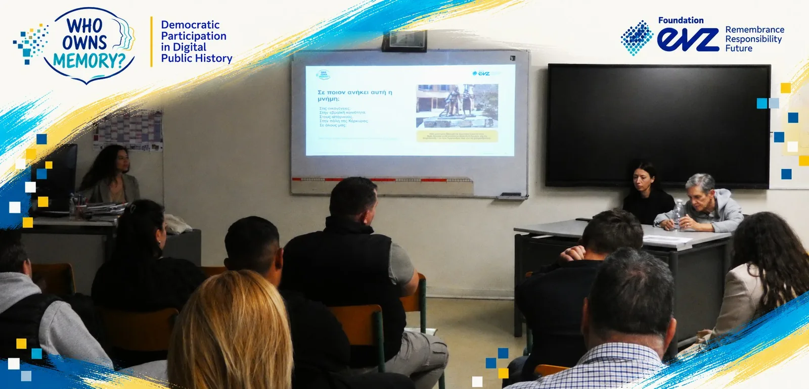

The Jewish Community of Corfu: local history, evidence and memory
The Holocaust of the Jewish community of Corfu served as a common demonstration case across the programme: a way to show how historians move from a broad historical subject to focused, ethical and accessible public history.
Why Corfu?
Working with the same case allowed participants to see how different historical methods connect. A photograph raises questions of place and visibility, a military order shows bureaucratic structures, survivor testimony opens another register of evidence and memory; the contemporary city raises questions about absence, commemoration and public knowledge.
The Corfu thread was a learning example. The same method could then be applied to family, local, national, community or transnational histories.
What can this source tell us? What can it not tell us? Which voice do we hear? Which voice is absent? What responsibilities come with bringing difficult histories into public space? How does place shape memory?
Corfu educational event · 27 October 2026
In collaboration with the Second Chance School of Corfu, the project combined historical context, documentary screening, archival sources, testimony and participatory discussion.


Documentary & discussion
Selected parts of The Jews of Corfu were followed by discussion with Maria Boua, whose historical research contributed to the documentary, and Nina Vital, who brought a family and community perspective to the conversation.
A public-history question
The evening returned to the project’s central question: Who owns memory? The individual, the community, the historian, the city, or all of us?
From source to public narrative
The Corfu case was used to demonstrate a sequence of historical practice rather than a single story.
Identify a public question
Move beyond “the history of…” toward a focused question about memory, place, responsibility or visibility.
Select and evaluate sources
Photographs, documents, testimony and places offer different evidence and must be read in context.
Recognise missing voices
Ask what is absent, marginalised, mediated or impossible to recover.
Address difficult history ethically
Representation, trauma, consent, dignity and community sensitivity shape how stories are made public.
Choose a digital form
Web story, map, timeline, audio, video or photo essay should serve the historical argument rather than determine it.
Write for a public audience
Clarity does not require simplification. Public history can remain complex, sourced and transparent.